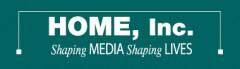

HOME Inc.

Website:
http://www.homeinc.org/ Location:
Boston, MA
Our mission is to make a positive difference in the lives of young people.
We teach video production and media analysis to educators and youth to foster confident, creative, individuals with the ability to think for themselves.
Our programs help students develop creative media projects that foster teamwork and communication skills. HOME’s media projects and programs focus on teacher and student collaboration and the ability to effectively evaluate media messages, in order to enhance critical thinking skills.
For HOME, the arts are a vital means of self-expression and a fundamental tool for stimulating lifelong learning.
HOME also supports artists with its “Artist in Residence” program.
We invite you to review the exciting projects, people, education, multimedia services and opportunities we offer in partnership with education and arts organizations.
Supported Projects
CTC Youth Program Building
Stephen LoVerme
11/2007 — 6/2009
As a CTC HOME, Inc has been working with the Boston Public schools to develop community computer/media labs in several schools. The main thrust of the program has been based on a Media Literacy and Health project that was funded by the U.S. Department Education under which we have been developing media and technology curriculum in five schools.
This Summer we are projecting having 25 teens in a 30 hour per week six week, media intensive at the BNN studio in Roxbury
The media lab project has five areas of focus:
1) strengthening teens’ confidence through projects after school in media arts, that include self expression through media and computer techonologies.
2) providing professional development for teachers in project-based learning and media literacy to help connect after school with in school learning,
3) providing workshops and projects after school that increase teens’ critical thinking, communications and problem solving skills,
4) building an in-school and after school network of teachers, parents and mentors to support teens.
5) building a broad base of funding support for the program.
Currently HOME, Inc has two full time staff devoted to the project.
Each CTC ProjectCoordinator/VISTA will work with the administrators at each of the school and after school programs to help develop the in-school and after school network of teachers, parents and mentors that can provide support to the students utilizing the media lab.
Stephen was the primary link between HOME, Inc. and Brighton High School. providing technical support to four teachers and supporting teachers in two media classes by helping to develop curriculum, provide professional development support including support to the teachers as they learned new computer applications. Stephen provided additional help to some of the students and helped our Media Lab Coordinator organize his work and program at Social Justice Academy. Stephen updated our website and helped develop and update our summer Teen TV content management system for our six week long summer intensive.
Stephen is a dedicated, sensitive and creative teacher who in his low key style gains the trust of hardened and skeptical teachers and students at the schools. He has outstanding problem solving skills and accepts most difficulties with grace and a can do attitude. Stephen was able to provide a high degree of leadership during our summer Teen TV intensive, providing both technical and creative support that encouraged staff and students to excel. His work on our website has helped to ensure that the content management system will continue to be an important factor in our organization’s growth and success.
“Stephen has been an outstanding and dedicated VISTA. An example is how he is willing to devote time to bring others up to speed in areas where they are having difficulty. He is extremely patient and dedicated others success and this has won him the support of technophobic teachers, hurried administrators and skeptical students.”
- Alan Michel, supervisor
Youth Outreach
Kevin Palmer
6/2006 — 9/2008
At the English High School Kevin Palmer helped develop the curriculum for the after school and worked in school workshops to three full days.
Kevin increased the number of teens participating in after school to 30 and cemented our relationship with Xavier Rozas, the media teacher at the school. We have developed a new curriculum, created a prototype blog and self paced instructional web site, with project and management support for volunteers and have introduced new technologies such as Live Type, into the after school lab space.
We have also initiated a new internship program for our teens which will begin this Fall at the Schattuck Hospital and we have developed internship agreements with Harvard University and Emerson College. Our e newsletter contacts have increased by 1,000 names. Kevin completed a manual for new employees and volunteers at HOME, Inc. to help new volunteers and VISTAs to more easily integrate themselves into the programs at the media labs. Both of our VISTAs have been very dedicated and resourceful in supporting the media lab after school initiatives. They have found themselves being passionate about our mission to help teens develop creative, multidisciplinary media and education projects that foster teamwork and communication skills, community building, insight into critical issues, and ways to express those issues to others.
CTC Program Building
Aaron McGuire
9/2006 — 9/2007
This year we had a number of major accomplishments with AJ McGuire, including establishing a new course at the Social Justice Academy called Committee, that has added a core of projects for teens to complete in after school. After school projects for example, are incorporating Action Research principles that allow students to examine issues such as Global Warming and it’s impact on energy consumption and lifestyles, and equity in education in the Boston Public Schools and at the Social eeJustice Academy. The after school Mosaic program screened their videos for the entire student body in March, and we continued to make connections with new teachers and students both during school and after school. We have increase the number of teens participating in After School to 17. Our program has expanded to three full days per week. Two of our teens from the Social Justice Academy After School continued to work in our Summer Intensive at the Boston Neighborhood Network (BNN) in the Mall of Roxbury, where AJ was the lead program developer. Working in teams of 5 with three other team leaders, AJ helped to develop the curriculum, developed a web site workspace where projects could be posted and created a web based project tracking system based on the Drupal programming language.
Both of our VISTAs have been very dedicated and resourceful in supporting the media lab after school initiatives. They have found themselves being passionate about our mission to help teens develop creative, multidisciplinary media and education projects that foster teamwork and communication skills, community building, insight into critical issues, and ways to express those issues to others.
Outreach Coordinator
Dean Gransar
9/2005 — 9/2006
The CTC Project Assistant/VISTA will work with the administrators at each of the school and after school programs to help develop the in-school and after school network of teachers, parents and mentors that can provide support to the students utilizing the media lab. This will include developing events, committees, guest speakers and other outreach initiatives that will help publicize the community media lab, and help to identify and work with community partners who can take advantage of the media lab and reach more young people.
Dean has been very attentive and invested in our mission and our work. He has built a strong base of support with teachers and administrators at the Social Justice Academy. This has allowed the school to build our program into their after school program and to help to build the connections with teachers that is needed to truly customize our work with young people during after school. This is a very important contribution.
This year we had a number of major accomplishments including establishing a new media lab at the Social Justice Academy and a new media and technology curriculum called Mosaic at the Social Justice Academy that uses storytelling to connect different academic disciplines. Mosaic started as an after school program and was so well received that students were given academic credit for their participation. Eight students completed the curriculum. Dean worked extensively on the Mosaic Curriculum and did outreach at the school by making ” Mosaic” presentations in classes during regular school hours. Dean also was in charge of our e-newsletter and built the circulation from 1,000 to nearly 4,000.
Related Content
None created yet!